Сегодня мы рассмотрим довольно скучную тему, без понимания которой двигаться дальше не представляется возможным. Эта тема называется «округление чисел» или по-другому «приближённые значения чисел».
Содержание урока- Приближённые значения
- Округление чисел
- Первое правило округления
- Второе правило округления
- Округление десятичных дробей
Приближённые значения
Приближённые (или приблизительные) значения применяются тогда, когда точное значение чего-то найти невозможно, или же не важно чтобы это значение было точным для исследуемого предмета.
Например, на словах можно сказать, что в городе проживает полмиллиона человек, но это высказывание не будет истинным, поскольку количество человек в городе меняется — люди приезжают и уезжают, рождаются и умирают. Поэтому правильнее будет сказать, что в городе проживает приблизительно полмиллиона человек.
Ещё пример. В девять утра начинаются занятия. Мы вышли из дома в 8:30. Через некоторое время по дороге мы встретили своего товарища, который спросил у нас сколько сейчас времени. Когда мы выходили из дома было 8:30, на дорогу мы потратили какое-то неизвестное время. Мы не знаем сколько сейчас времени, поэтому отвечаем товарищу: «сейчас приблизительно около девяти часов».
В математике приближенные значения указываются с помощью специального знака. Выглядит он следующим образом:
Читается как «приближённо (приблизительно) равно».
Чтобы указать приближённое (приблизительное) значение, прибегают к такому действию как округление чисел.
Округление чисел
Для нахождения приближенного значения применяется такое действие как округление чисел.
Слово «округление» говорит само за себя. Округлить число значит сделать его круглым. Круглым называется число, которое оканчивается нулём. Например, следующие числа являются круглыми:
10, 20, 30, 100, 300, 700, 1000
Любое число можно сделать круглым. Процедуру, при которой число делают круглым, называют округлением числá.
Мы уже занимались «округлением» чисел, когда делили большие числа. Напомним, что для этого мы оставляли без изменения цифру, образующую старший разряд, а остальные цифры заменяли нулями. Но это были лишь наброски, которые мы делали для облегчения деления. Своего рода лайфхак. По факту, это даже не являлось округлением чисел. Именно поэтому в начале данного абзаца мы взяли слово округление в кавычки.
На самом деле, суть округления заключается в том, чтобы найти ближайшее значение от исходного. При этом, число может быть округлено до определённого разряда — до разряда десятков, разряда сотен, разряда тысяч.
Рассмотрим простой пример на округление. Дано число 17. Требуется округлить его до разряда десятков.
Не забегая вперёд попробуем понять, что означает «округлить до разряда десятков». Когда говорят округлить число 17, то надо понимать, что от нас требуют найти ближайшее круглое число от числá 17. Причём в ходе этого поиска возможно изменения коснутся и той цифры, которая располагается в разряде десятков числá 17 (т.е цифры 1).
Предстáвим числа от 10 до 20 с помощью следующего рисунка:
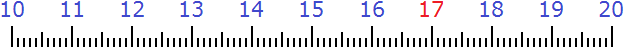
На рисунке видно, что для числá 17 ближайшее круглое число это число 20. Значит ответ к задаче таким и будет: «17 приближённо равно 20″
17 ≈ 20
Мы нашли приближённое значение для 17, то есть округлили его до разряда десятков. Видно, что после округления в разряде десятков появилась новая цифра 2.
Попробуем найти приближённое число для числа 12. Для этого снова предстáвим числа от 10 до 20 с помощью рисунка:
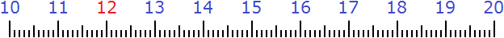
На рисунке видно, что ближайшее круглое число для 12 это число 10. Значит ответ к задаче таким и будет: 12 приближённо равно 10
12 ≈ 10
Мы нашли приближённое значение для 12, то есть округлили его до разряда десятков. В этот раз цифра 1, которая стояла в разряде десятков в числе 12, не пострадала от округления. Почему так получилось мы расскажем позже.
Попробуем найти ближайшее число для числá 15. Снова предстáвим числа от 10 до 20 с помощью рисунка:
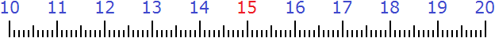
На рисунке видно, что число 15 одинаково удалено от круглых чисел 10 и 20. Возникает вопрос: которое из этих круглых чисел будет приближённым значением для числа 15? Для таких случаев условились принимать бóльшее число за приближённое. 20 больше чем 10, поэтому приближённое значение для 15 будет число 20
15 ≈ 20
Округлять можно и большие числа. Естественно, для них делать рисунки и изображать числа не представляется возможным. Для них существует свой способ. Например, округлим число 1456 до разряда десятков.
Итак, мы должны округлить 1456 до разряда десятков. Разряд десятков начинается на пятёрке:
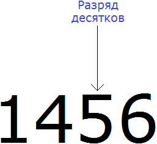
Теперь о существовании первых цифр 1 и 4 временно забываем. Остается число 56
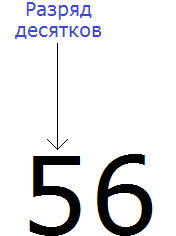
Теперь смотрим, какое круглое число находится ближе к числу 56. Очевидно, что ближайшее круглое число для 56 это число 60. Значит заменяем число 56 на число 60
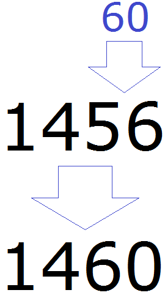
Значит при округлении числа 1456 до разряда десятков полýчим 1460
1456 ≈ 1460
Видно, что после округления числа 1456 до разряда десятков, изменения коснулись и самогó разряда десятков. В новом полученном числе в разряде десятков теперь располагается цифра 6, а не 5.
Округлять числа можно не только до разряда десятков. Округлять число можно до разряда сотен, тысяч, десятков тысяч и так далее.
После того, как станóвится ясно, что округление это ни что иное как поиск ближáйшего числá, можно применять готовые правила, которые значительно облегчают округление чисел.
Первое правило округления
В предыдущих примерах мы видели, что округляя число до определенного разряда, младшие разряды заменяются нулями. Цифры, которые заменяются нулями, называют отбрасываемыми цифрами.
Первое правило округления выглядит следующим образом:
Если при округлении чисел первая из отбрасываемых цифр 0, 1, 2, 3 или 4, то сохраняемая цифра остаётся без изменений.
Например, округлим число 123 до разряда десятков.
В первую очередь находим сохраняемую цифру. Для этого надо прочитать самó задание. В разряде, о котором говорится в задании и находится сохраняемая цифра. В задании сказано: округлить число 123 до разряда десятков.
Видим, что в разряде десятков нахóдится двойка. Значит сохраняемой цифрой является цифра 2
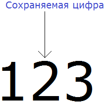
Теперь находим первую из отбрасываемых цифр. Первой из отбрасываемых цифр является та цифра, которая следует после сохраняемой цифрой. Видим, что первая цифра после двойки это цифра 3. Значит цифра 3 является первой отбрасываемой цифрой.
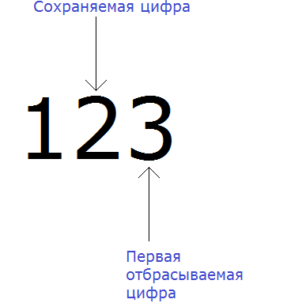
Теперь применяем правило округления. Оно говорит, что если при округлении чисел первая из отбрасываемых цифр 0, 1, 2, 3 или 4, то сохраняемая цифра остаётся без изменений.
Так и делаем. Оставляем без изменения сохраняемую цифру, а все младшие разряды заменяем нулями. Другими словами, всё что следует после цифры 2 заменяем нулями (точнее нулём):
123 ≈ 120
Значит при округлении числа 123 до разряда десятков, получаем приближённое ему число 120.
Теперь попробуем округлить то же самое число 123, но уже до разряда сотен.
Нам требуется округлить число 123 до разряда сотен. Снова ищем сохраняемую цифру. В этот раз сохраняемой цифрой является 1, поскольку мы округляем число до разряда сотен.
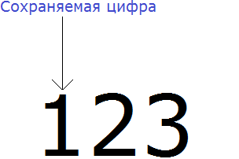
Теперь находим первую из отбрасываемых цифр. Первой из отбрасываемых цифр является та цифра, которая следует после сохраняемой цифрой. Видим, что первая цифра после единицы это цифра 2. Значит цифра 2 является первой отбрасываемой цифрой:
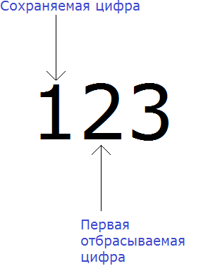
Теперь применим правило. Оно говорит, что если при округлении чисел первая из отбрасываемых цифр 0, 1, 2, 3 или 4, то сохраняемая цифра остаётся без изменений.
Так и делаем. Оставляем без изменения сохраняемую цифру, а все младшие разряды заменяем нулями. Другими словами, всё что следует после цифры 1 заменяем нулями:
123 ≈ 100
Значит при округлении числа 123 до разряда сотен, получаем приближённое ему число 100.
Пример 3. Округлить число 1234 до разряда десятков.
Здесь сохраняемая цифра это 3. А первая отбрасываемая цифра это 4. Согласно правилу, если при округлении чисел первая из отбрасываемых цифр 0, 1, 2, 3 или 4, то сохраняемая цифра остаётся без изменений.
Значит оставляем сохраняемую цифру 3 без изменений, а всё что располагается после неё заменяем нулём:
1234 ≈ 1230
Пример 4. Округлить число 1234 до разряда сотен.
Здесь сохраняемая цифра это 2. А первая отбрасываемая цифра это 3. Согласно правилу, если при округлении чисел первая из отбрасываемых цифр 0, 1, 2, 3 или 4, то сохраняемая цифра остаётся без изменений.
Значит оставляем сохраняемую цифру 2 без изменений, а всё что располагается после неё заменяем нулями:
1234 ≈ 1200
Пример 3. Округлить число 1234 до разряда тысяч.
Здесь сохраняемая цифра это 1. А первая отбрасываемая цифра это 2. Согласно правилу, если при округлении чисел первая из отбрасываемых цифр 0, 1, 2, 3 или 4, то сохраняемая цифра остаётся без изменений.
Значит оставляем сохраняемую цифру 1 без изменений, а всё что располагается после неё заменяем нулями:
1234 ≈ 1000
Второе правило округления
Второе правило округления выглядит следующим образом:
Если при округлении чисел первая из отбрасываемых цифр 5, 6, 7, 8 или 9, то сохраняемая цифра увеличивается на единицу.
Например, округлим число 675 до разряда десятков.
В первую очередь находим сохраняемую цифру. Для этого надо прочитать само задание. В разряде, о котором говорится в задании и находится сохраняемая цифра. В задании сказано: округлить число 675 до разряда десятков.
Видим, что в разряде десятков находится семёрка. Значит сохраняемой цифрой является цифра 7
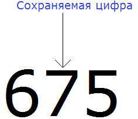
Теперь находим первую из отбрасываемых цифр. Первой из отбрасываемых цифр является та цифра, которая следует после сохраняемой цифрой. Видим, что первая цифра после семёрки это цифра 5. Значит цифра 5 является первой отбрасываемой цифрой.
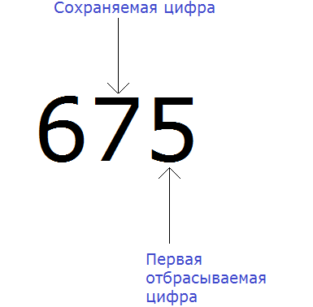
Теперь применяем второе правило округления. Оно говорит, что если при округлении чисел первая из отбрасываемых цифр 5, 6, 7, 8 или 9, то сохраняемая цифра увеличивается на единицу.
У нас первая из отбрасываемых цифр это 5. Значит мы должны увеличить на единицу сохраняемую цифру 7, а всё что следует после неё заменить нулём:
675 ≈ 680
Значит при округлении числа 675 до разряда десятков, получаем приближённое ему число 680.
Теперь попробуем округлить то же самое число 675, но уже до разряда сотен.
Нам требуется округлить число 675 до разряда сотен. Снова ищем сохраняемую цифру. В этот раз сохраняемой цифрой является 6, поскольку мы округляем число до разряда сотен:
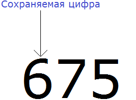
Теперь находим первую из отбрасываемых цифр. Первой из отбрасываемых цифр является та цифра, которая следует после сохраняемой цифрой. Видим, что первая цифра после шестёрки это цифра 7. Значит цифра 7 является первой отбрасываемой цифрой:
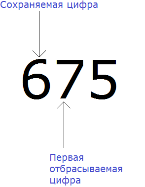
Теперь применяем второе правило округления. Оно говорит, что если при округлении чисел первая из отбрасываемых цифр 5, 6, 7, 8 или 9, то сохраняемая цифра увеличивается на единицу.
У нас первая из отбрасываемых цифр это 7. Значит мы должны увеличить на единицу сохраняемую цифру 6, а всё что следует после неё заменить нулями:
675 ≈ 700
Значит при округлении числа 675 до разряда сотен, получаем приближённое ему число 700.
Пример 3. Округлить число 9876 до разряда десятков.
Здесь сохраняемая цифра это 7. А первая отбрасываемая цифра это 6. Согласно правилу, если при округлении чисел первая из отбрасываемых цифр 5, 6, 7, 8 или 9, то сохраняемая цифра увеличивается на единицу.
Значит увеличиваем на единицу сохраняемую цифру 7, а всё что располагается после неё заменяем нулём:
9876 ≈ 9880
Пример 4. Округлить число 9876 до разряда сотен.
Здесь сохраняемая цифра это 8. А первая отбрасываемая цифра это 7. Согласно правилу, если при округлении чисел первая из отбрасываемых цифр 5, 6, 7, 8 или 9, то сохраняемая цифра увеличивается на единицу.
Значит увеличиваем на единицу сохраняемую цифру 8, а всё что располагается после неё заменяем нулями:
9876 ≈ 9900
Пример 5. Округлить число 9876 до разряда тысяч.
Здесь сохраняемая цифра это 9. А первая отбрасываемая цифра это 8. Согласно правилу, если при округлении чисел первая из отбрасываемых цифр 5, 6, 7, 8 или 9, то сохраняемая цифра увеличивается на единицу.
Значит увеличиваем на единицу сохраняемую цифру 9, а всё что располагается после неё заменяем нулями:
9876 ≈ 10000
Пример 6. Округлить число 2971 до сотен.
При округлении этого числа до сотен следует быть внимательным, поскольку сохраняемая цифра здесь 9, а первая отбрасываемая цифра это 7. Значит цифра 9 должна увеличиться на единицу. Но дело в том, что после увеличения девятки на единицу получится 10, а это цифра не вместится в разряд сотен нового числа.
В этом случае, в разряде сотен нового числа надо записать 0, а единицу перенести на следующий разряд и сложить с цифрой, которая там находится. Далее заменить все цифры после сохраняемой нулями:
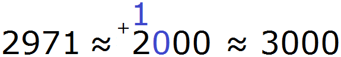
2971 ≈ 3000
Округление десятичных дробей
При округлении десятичных дробей следует быть особенно внимательным, поскольку десятичная дробь состоит из целой и дробной части. И каждая из этих двух частей имеет свои разряды:
Разряды целой части:
- разряд единиц;
- разряд десятков;
- разряд сотен;
- разряд тысяч.
Разряды дробной части:
- разряд десятых;
- разряд сотых;
- разряд тысячных
Рассмотрим десятичную дробь 123,456 — сто двадцать три целых четыреста пятьдесят шесть тысячных. Здесь целая часть это 123, а дробная часть 456. При этом у каждой из этих частей есть свои разряды. Очень важно не путать их:
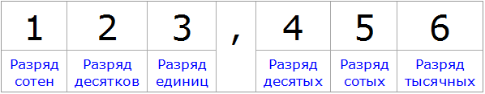
Для целой части применяются те же правила округления, что и для обычных чисел. Отличие в том, что после округления целой части и замены нулями всех цифр после сохраняемой цифры, дробная часть полностью отбрасывается.
Например, округлим дробь 123,456 до разряда десятков. Именно до разряда десятков, а не разряда десятых. Очень важно не перепутать эти разряды. Разряд десятков располагается в целой части, а разряд десятых в дробной.
Итак, мы должны округлить 123,456 до разряда десятков. Сохраняемая цифра здесь это 2, а первая из отбрасываемых цифр это 3
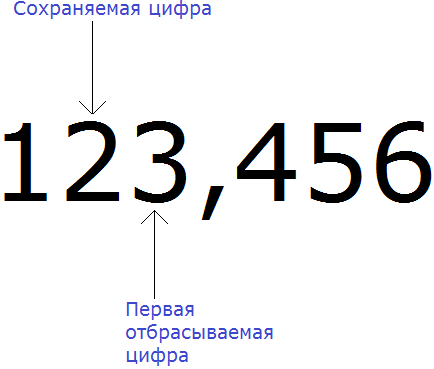
Согласно правилу, если при округлении чисел первая из отбрасываемых цифр 0, 1, 2, 3 или 4, то сохраняемая цифра остаётся без изменений.
Значит сохраняемая цифра останется без изменений, а всё остальное заменится нулём. А что делать с дробной частью? Её просто отбрасывают (убирают):
123,456 ≈ 120
Теперь попробуем округлить ту же самую дробь 123,456 до разряда единиц. Сохраняемая цифра здесь будет 3, а первая из отбрасываемых цифр это 4, которая находится в дробной части:
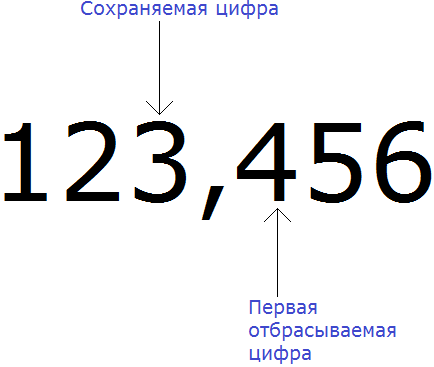
Согласно правилу, если при округлении чисел первая из отбрасываемых цифр 0, 1, 2, 3 или 4, то сохраняемая цифра остаётся без изменений.
Значит сохраняемая цифра останется без изменений, а всё остальное заменится нулём. Оставшаяся дробная часть будет отброшена:
123,456 ≈ 123,0
Ноль, который остался после запятой тоже можно отбросить. Значит окончательный ответ будет выглядеть следующим образом:
123,456 ≈ 123,0 ≈ 123
Теперь займёмся округлением дробных частей. Для округления дробных частей справедливы те же правила, что и для округления целых частей. Попробуем округлить дробь 123,456 до разряда десятых. В разряде десятых располагается цифра 4, значит она является сохраняемой цифрой, а первая отбрасываемая цифра это 5, которая находится в разряде сотых:
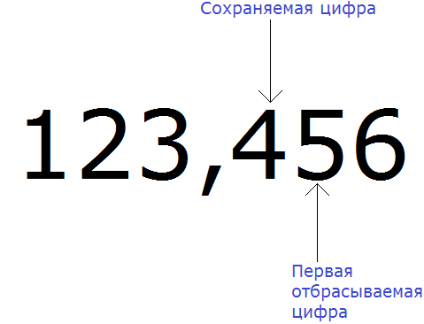
Согласно правилу, если при округлении чисел первая из отбрасываемых цифр 5, 6, 7, 8 или 9, то сохраняемая цифра увеличивается на единицу.
Значит сохраняемая цифра 4 увеличится на единицу, а остальная часть заменится нулями
123,456 ≈ 123,500
Попробуем округлить ту же самую дробь 123,456 до разряда сотых. Сохраняемая цифра здесь это 5, а первая из отбрасываемых цифр это 6, которая находится в разряде тысячных:
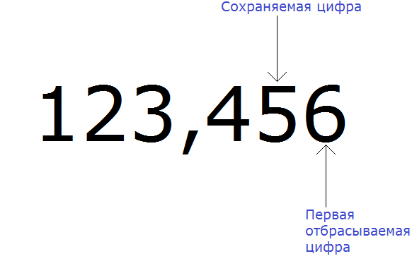
Согласно правилу, если при округлении чисел первая из отбрасываемых цифр 5, 6, 7, 8 или 9, то сохраняемая цифра увеличивается на единицу.
Значит сохраняемая цифра 5 увеличится на единицу, а остальная часть заменится нулями
123,456 ≈ 123,460
Понравился урок?
Вступай в нашу новую группу Вконтакте и начни получать уведомления о новых уроках